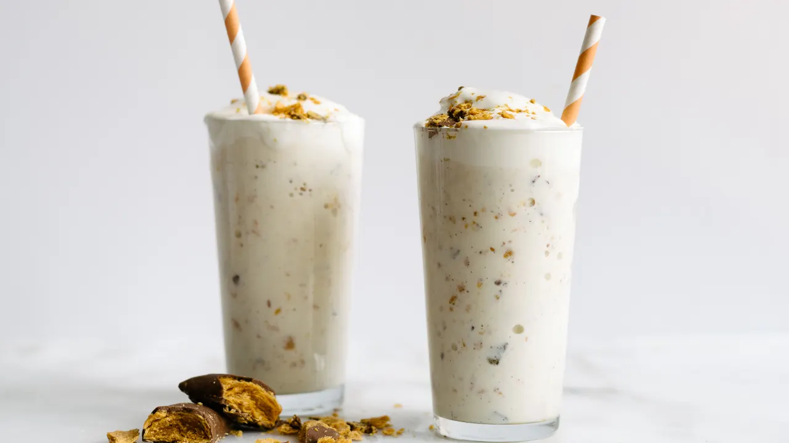

Best Halloween Treat Recipe
Halloween parties and other autumn celebrations tend to take a scary (and delicious) turn when these savory and sweet treats—from caramel apples to jalapeño popper mummies—appear.
Bone-Chilling Halloween Breakfast Idea
What better way to make the most of the scariest day of the year than by starting it with a creepy breakfast.
Leftover Halloween Candy Recipe
Saddled with tons of leftover Halloween candy? Pop the extras in your freezer for now, and then try one of these ingenious ideas for using up your stash later.